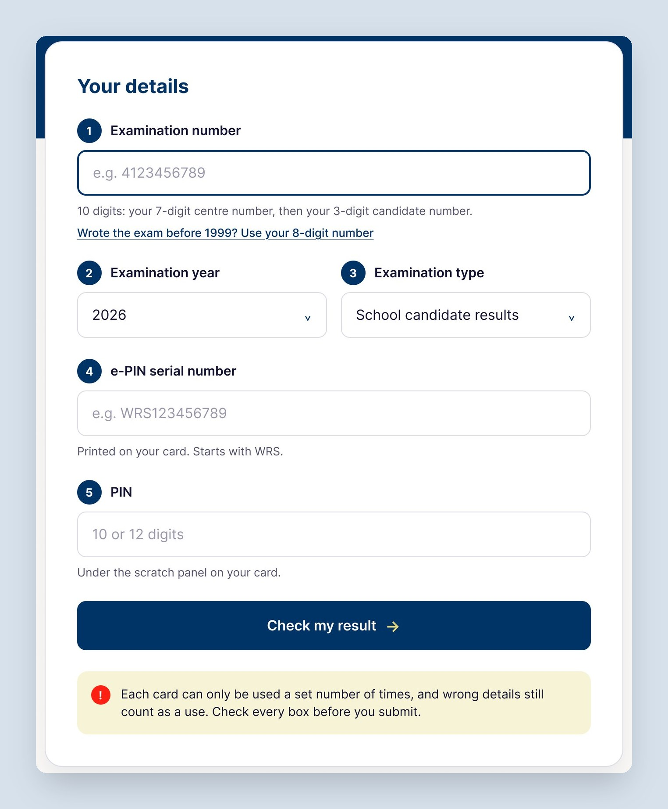
01
A tip under every box
Each box says what goes in it, like “10 digits: your 7-digit centre number, then your 3-digit candidate number.” No guessing, and a warning that wrong details still use up a check.
Answers: no guessing05 / 07 · Web · Education · Unsolicited redesign
Know what goes in every box.
A redesign of waecdirect.org that keeps the same structure, but shows students exactly what goes in each box, so fewer checks are wasted.
ForSchool and private candidates checking results online
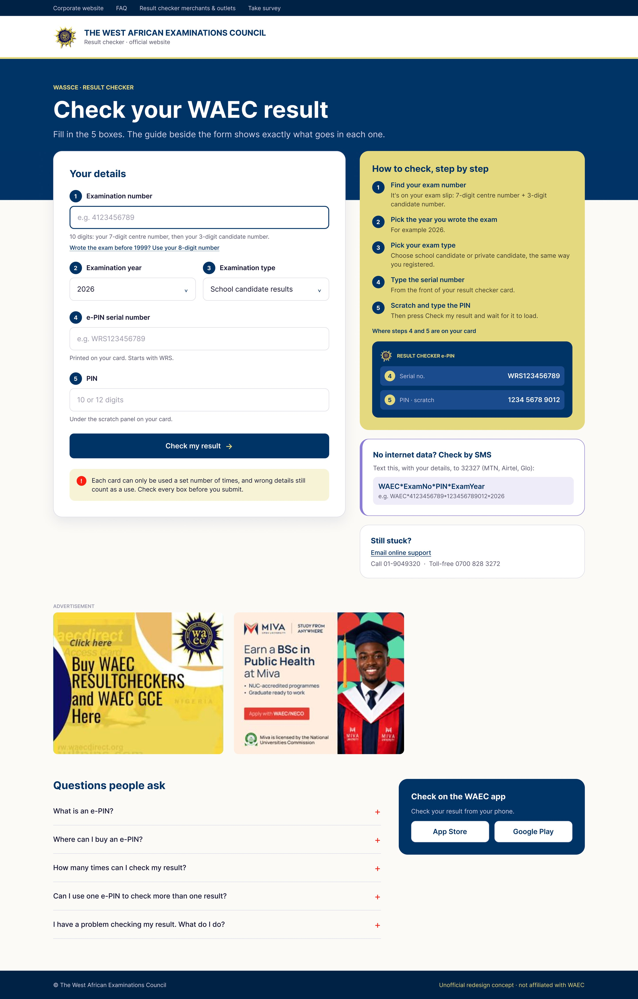
01 · The problem
To check a result on waecdirect.org, a candidate fills in their exam number, exam year, exam type, the card’s serial number and its PIN. Each card works a set number of times, and wrong details still count as a use. The page doesn’t say what goes in each box.
How might we
Help students fill every box right the first time, so no check on their card is wasted?
02 · Where it started
This is an unsolicited redesign. I studied the live waecdirect.org page and the e-PIN card itself, not WAEC’s data.
boxes to fill before you see a result
waecdirect.orgdigits in the exam number: a 7-digit centre number, then a 3-digit candidate number
Exam slipuse gone from the card for every attempt with wrong details
Card rulesStudents who know the page shouldn’t have to relearn it.
The serial and PIN are easier to find on a picture of the card.
A slow site shouldn’t block a result. SMS should sit next to the form.
Based on the public page and the card, not interviews, so I treat it as a hypothesis to test.
03 · Key decisions

Each box says what goes in it, like “10 digits: your 7-digit centre number, then your 3-digit candidate number.” No guessing, and a warning that wrong details still use up a check.
Answers: no guessing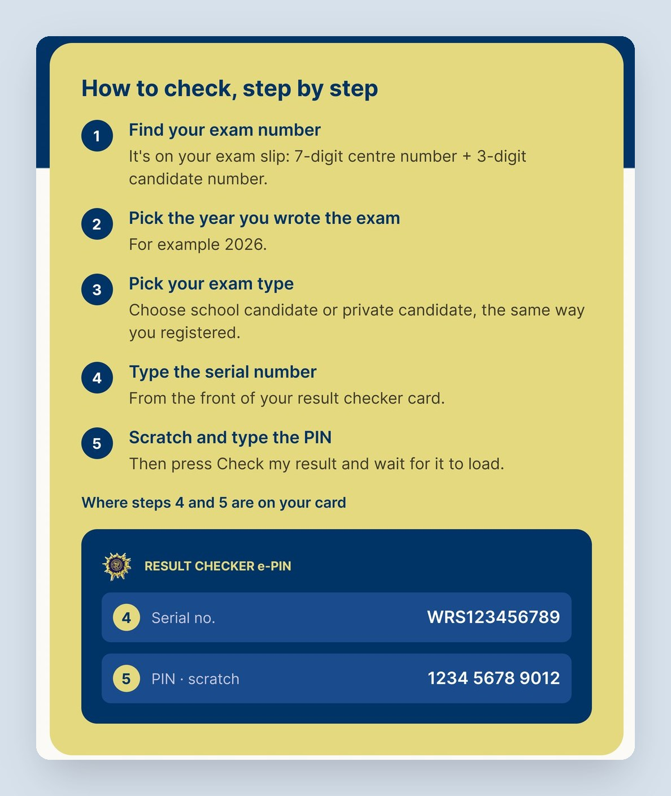
A picture of the e-PIN card shows where the serial number and the scratch PIN are, matching boxes 4 and 5.
Answers: fewer wasted checks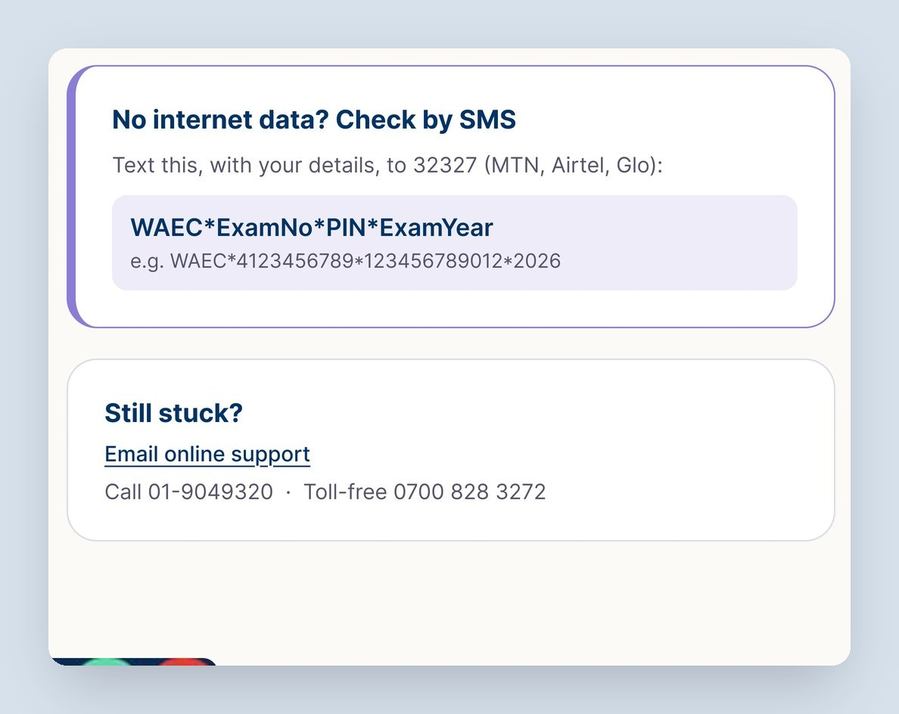
The SMS format and support numbers sit next to the form, so nobody is stuck if the site is slow.
Answers: no dead ends04 · Before and after
The live page asks for 5 details with no guidance and gives no hint that a wrong detail still uses up a check. The redesign keeps every box in the same order, then adds a tip under each one, a picture of the card, a clear warning before you submit, and SMS as a way through without data.
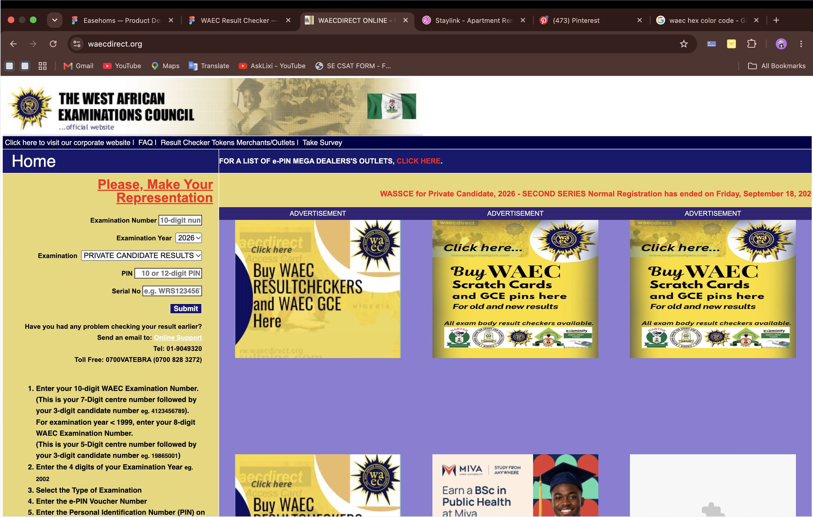
05 · Visual design
Blue #003366 leads: the header band, buttons and step numbers. Royal blue draws the card picture, and the guide panel uses the yellow from waecdirect.org, so the page still feels like WAEC.
06 · Process
Mapped every box on waecdirect.org and every number on the e-PIN card.
Kept the layout, then added tips, the card guide and SMS in grayscale.
WAEC blue, gold and logo, at desktop 1440 and mobile web 390.
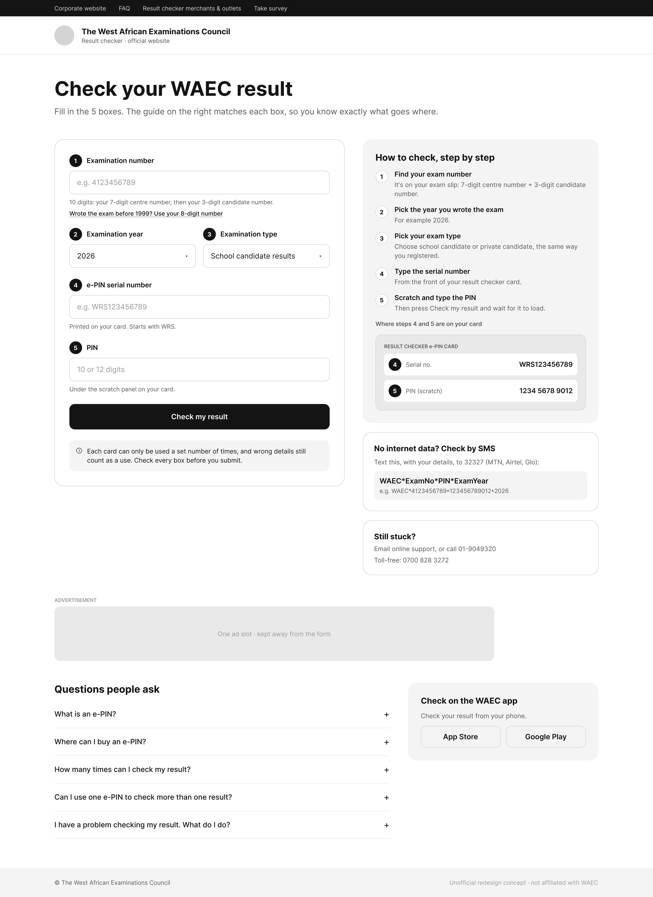
07 · A mobile variant
On mobile I also explored a step-by-step version in grayscale: one question per screen, from exam details to the result, with SMS as a way out. Then I designed five states for when things go wrong, so a student is never left on a dead end.
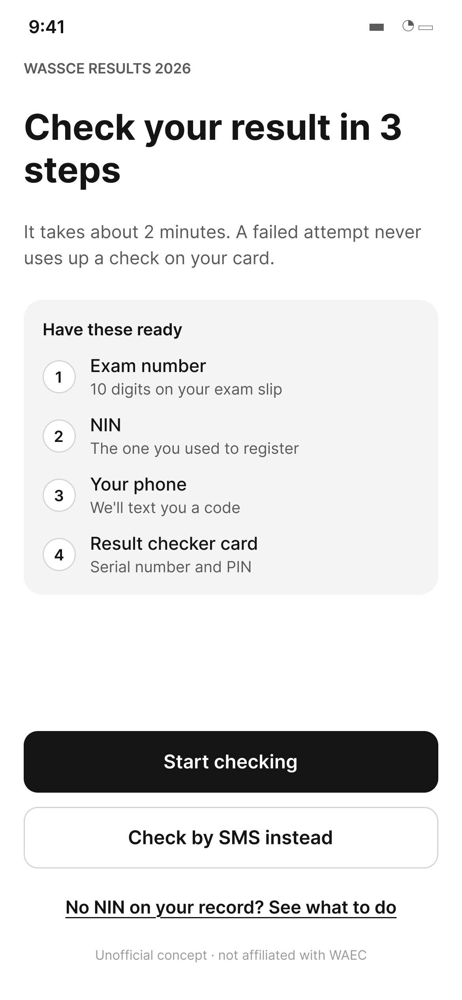
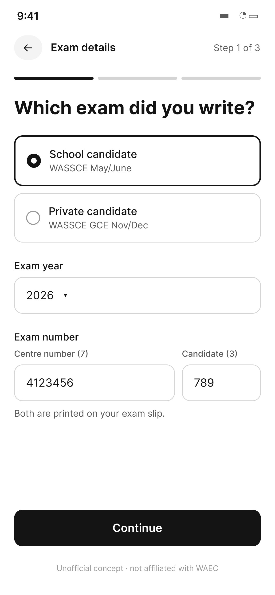
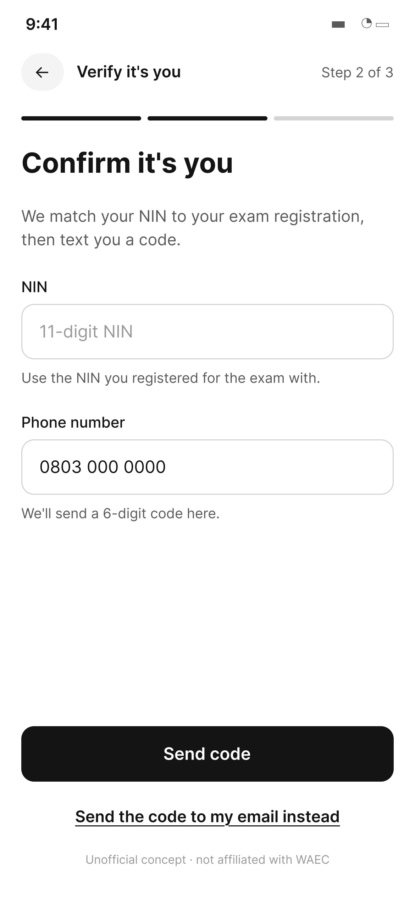
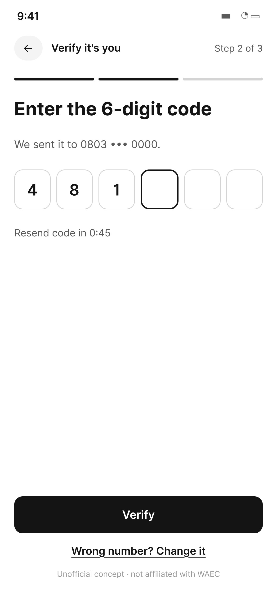
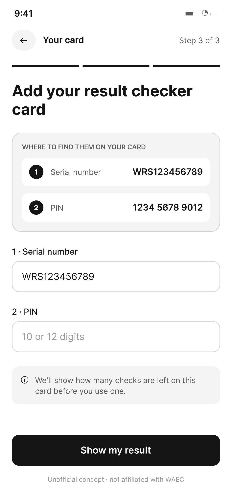
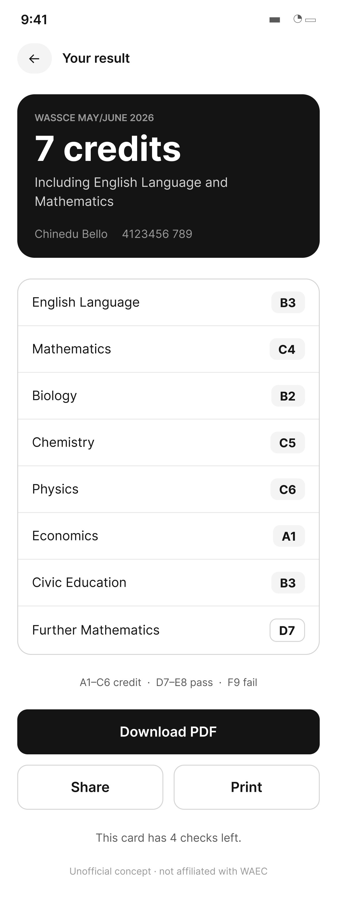
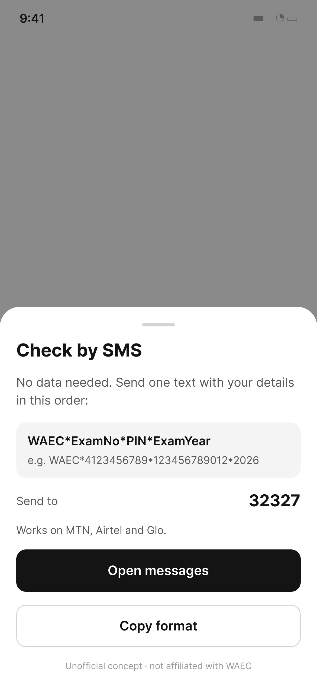
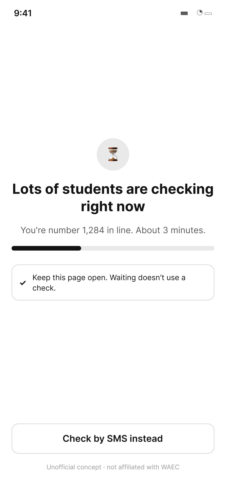
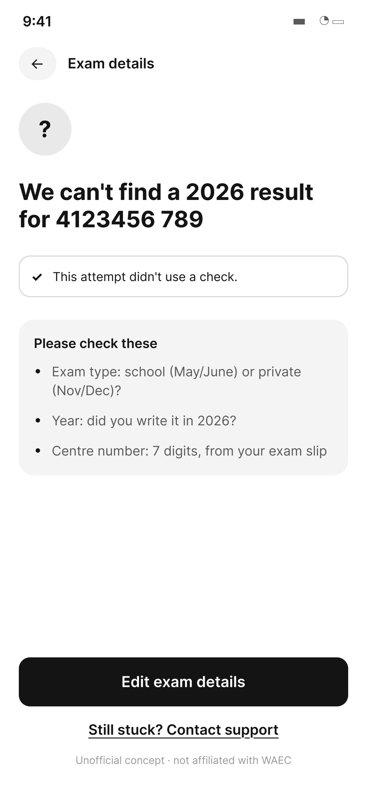
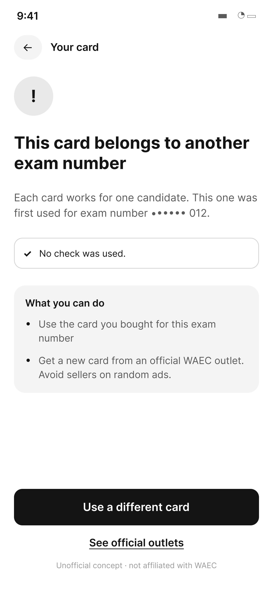
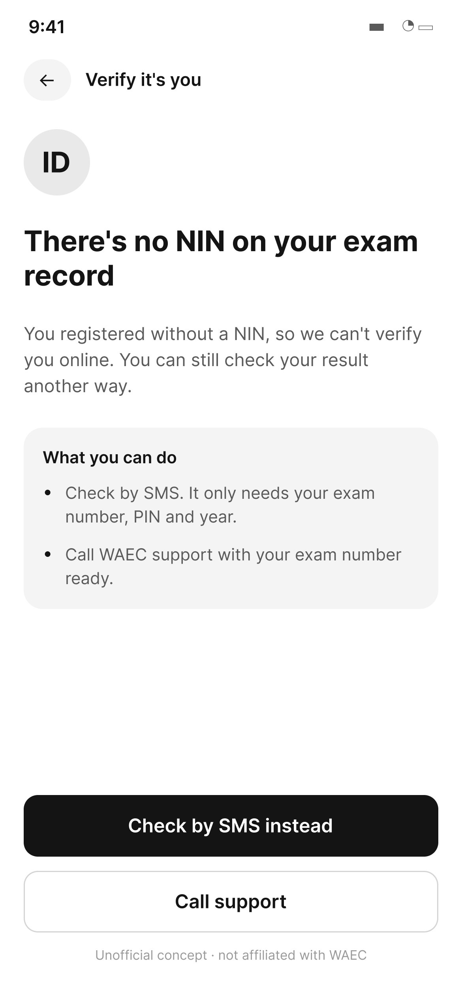
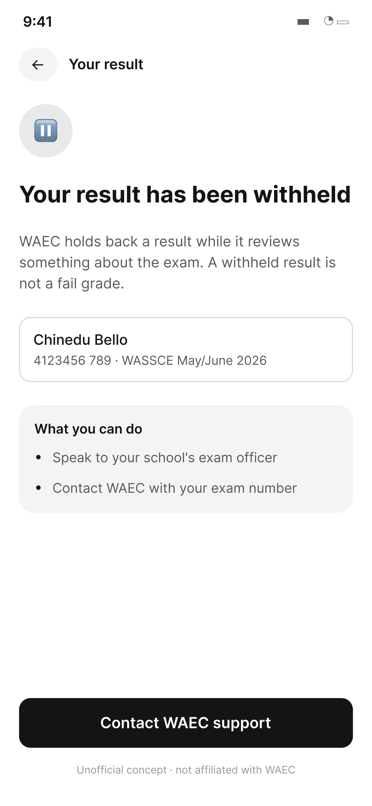
08 · Final screens
Every screen at full size. Each row scrolls sideways, and long pages scroll inside their window.
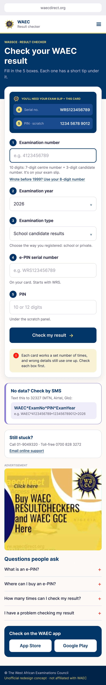
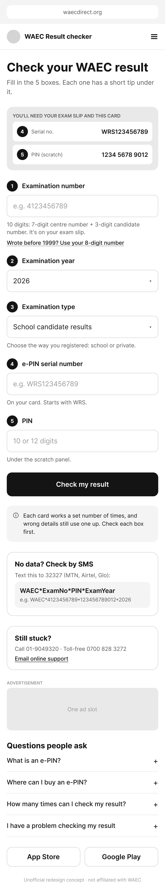
08 · Final screens
The final screen on desktop and phone. The full story has the mid-fi and the before.
Full story
The research behind it, the process, every screen and what I learned.
09 · What I learned
Most of this redesign is one line of guidance under each box.
Keeping the familiar layout makes the changes feel like help, not a new system.
No new flow was needed. Clear help on the same screen did the work.
Whether students fill all 5 boxes right the first time, and whether the card guide cuts wasted checks.
Next project